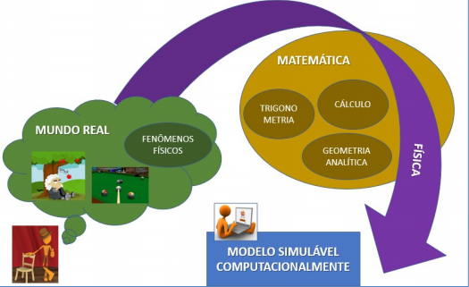
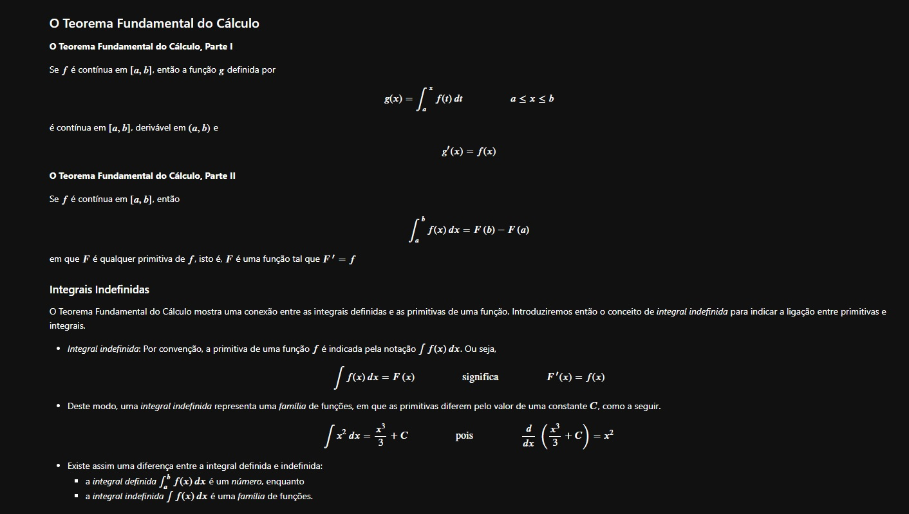

Modelagem de Fenômenos Físicos
|
Ministrado por Dr. Orlando Alcantara Soares, essa disciplina é ofertada aos estudantes ingressantes no curso de Bacharelado em Ciência da Computação. Ao final da disciplina, o estudante será capaz de combinar os temas de Cálculo, Geometria Analítica e Física para modelar e resolver problemas de situações reais, tais como movimento e equilíbrio de partículas e transformações de energia. Para a modelagem, ou seja, a representação simplificada de situações reais, executará métodos de solução e simulação de fenômenos físicos utilizando ferramentas computacionais. As aprendizagens desenvolvidas nesta disciplina serão fundamentais para as disciplinas de matemáticas presentes no decorrer do curso e também para a formação do raciocínio analítico envolvendo abstração, observação e compreensão da natureza. |
 |
|
Projetos Realizados |
|
|  |
O primeiro e mais importante projeto proposto, sendo obrigatório a utilização da linguagem Python, era documentar aspectos gerais, explicações e exemplos de códigos realizados em aula, a fim de entregar ao final do semestre todas as anotações realizadas em cada dia letivo. A atividade deveria ser entregue em um arquivo em formato "Notebook", proveniente da Interface de Desenvolvimento Integrado Jupyter, contendo as de todas as aulas em que o aluno esteve presente. |
|
O segundo e último projeto proposto, foi a realização de uma atividade envolvendo plotagem de gráficos. O objetivo era plotar 3 tipos de gráficos diferentes, sendo um deles uma fachada de uma casa, uma pista de skate, e uma plotagem de tema livre. Minha escolha foi fazer uma aproximação do simbolo do Artic Monkeys. Esse gráfico deu um pouco de trabalho devido aos cálculos necessários para que as ondas ficassem corretas. |

|

Copyright © 2020 by Eduardo Verbinen